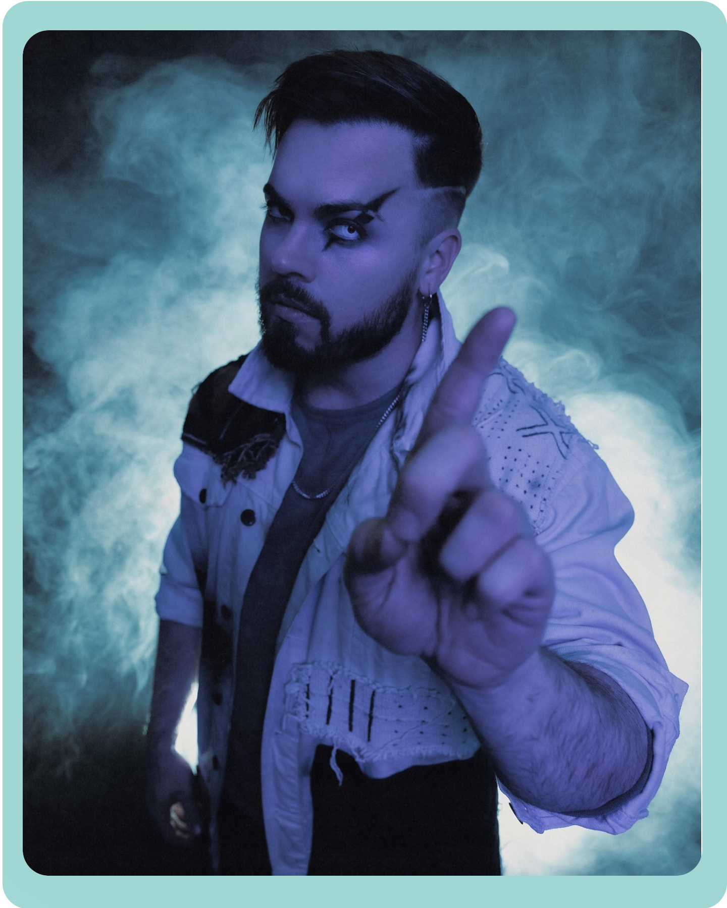
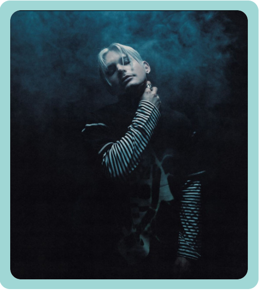
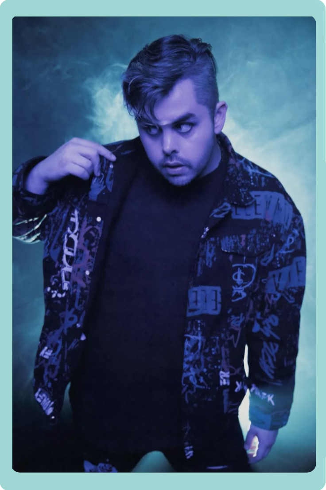

| Set It Off es una banda de rock estadounidense creada en Tampa (Florida, EE.UU.). Ganaron seguidores a través del canal de YouTube de su cantante, Cody Carson, después firmaron con Equal Vision Records al lanzar varias canciones, una de ellas "Why Worry", lanzada en 2014 con un gran éxito. Aunque su primer álbum, Cinematics (2012), entró en la Billboard 200 y tocaron en el Warped Tour en 2013 y 2015, su público también se vio expandido en cuando la canción "Wolf in Sheep's Clothing", de Duality (2014), se empezó a usar en redes en años posteriores por fandoms como el de Undertale. |
|
Como ejemplo de los vídeos de los que hablo, veamos el subido por el usuario Ichika a YouTube en 2018. |
|
 Cody Carson no es solo la voz principal, sino el motor creativo y conceptual de Set It Off. Su relación con la música viene de lejos: estudió clarinete y se formó en el mundo del teatro musical, una influencia que se refleja claramente en su puesta en escena dramática y en la teatralidad de sus álbumes. Su capacidad vocal le permite transitar con fluidez entre melodías pop muy pegadizas, pasajes de rock enérgico y registros vocales desgarradores. Además, es el principal responsable de las letras, caraterizadas por abordar la superación personal, el desamor, la salud mental y una fina ironía frente a la adversidad. Antes de consolidar la banda, Carson ganó notoriedad en YouTube subiendo versiones musicales. Su destino cambió cuando Alex Gaskarth, líder de All Time Low, lo invitó a cantar en vivo y lo motivó a fundar su propio proyecto. Desde entonces, Cody ha liderado la evolución del grupo, guiándolos desde el rock sinfónico y oscuro de sus inicios hasta un sonido pop-punk alternativo muy moderno, destacando siempre por su increíble conexión con los fanáticos en el escenario. |
|
 Maxx Danziger no es solo el baterista, sino la columna vertebral rítmica y una pieza visual clave en la identidad de Set It Off. Su enfoque de la percusión va mucho más allá de mantener el tempo: destaca por su técnica precisa, su energía desbordante en vivo y su habilidad para fusionar ritmos de pop bailable con la fuerza contundente del rock alternativo. Su batería es fundamental para marcar los cambios dinámicos y dramáticos que caracterizan las composiciones de la banda. Además, es una mente muy activa en el aspecto estético, involucrándose en el diseño, la producción visual y manteniendo un sentido del humor único que equilibra la intensidad del grupo. Antes de unirse al proyecto, Maxx perfeccionó su estilo tocando en diversas escenas locales, pero su química con Cody Carson y el resto de los integrantes consolidó el sonido definitivo de la banda. Desde entonces, ha sido el motor que impulsa la evolución musical del grupo, adaptándose con fluidez desde las atmósferas del rock sinfónico hasta los ritmos más modernos y experimentales del pop-punk electrónico, ganándose el cariño de los fanáticos por su carisma tanto dentro como fuera del escenario. |
|
 Zach DeWall es el guitarrista principal y el pilar armónico fundamental que sostiene la potente instrumentación de Set It Off. Su rol en el grupo es sumamente versátil: además de construir los riffs adictivos y los enérgicos acordes que definen el sonido de la banda, asumió de forma brillante las líneas del bajo eléctrico en el estudio tras la reestructuración del proyecto. Su técnica con la guitarra destaca por fusionar la agresividad del rock alternativo con la precisión rítmica del pop moderno, creando ganchos melódicos que se clavan en la mente desde la primera escucha. Desde los inicios de la agrupación en Florida, Zach ha sido una fuerza constante, guiando la transición de la banda desde las complejas composiciones de su etapa de rock sinfónico hasta experimentar con total naturalidad en los terrenos del pop-punk y la electrónica. Con su carismática presencia escénica y su entrega en cada concierto, se ha consolidado como un miembro insustituible y en un eslabón clave para la arrolladora energía que el trío proyecta en directo. |